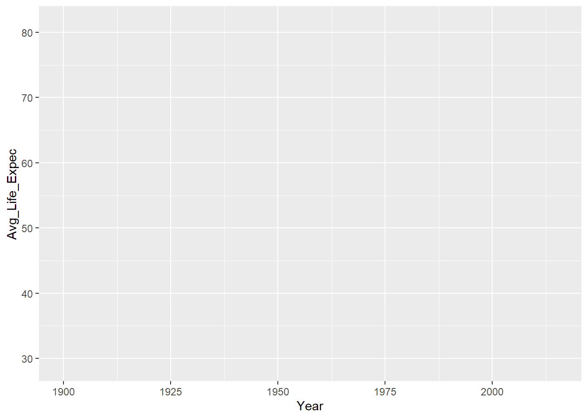
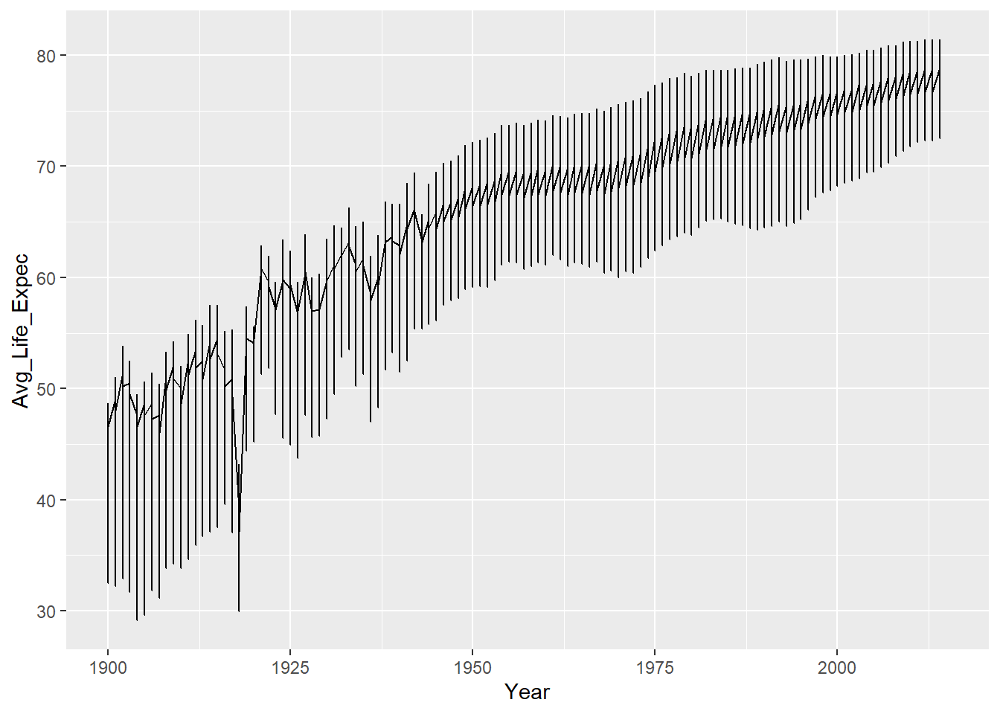
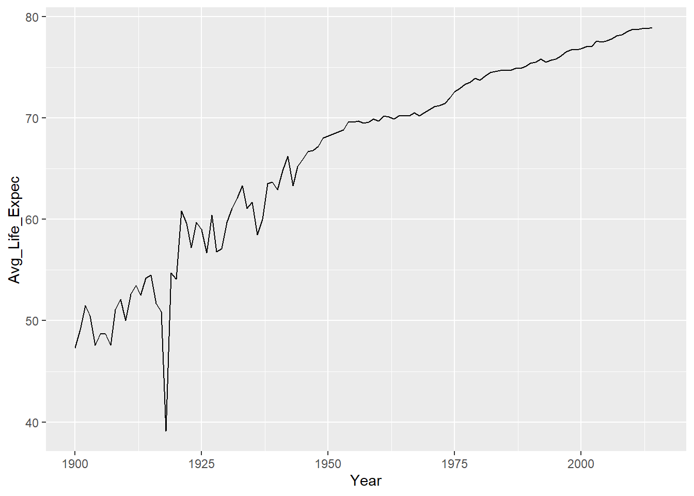
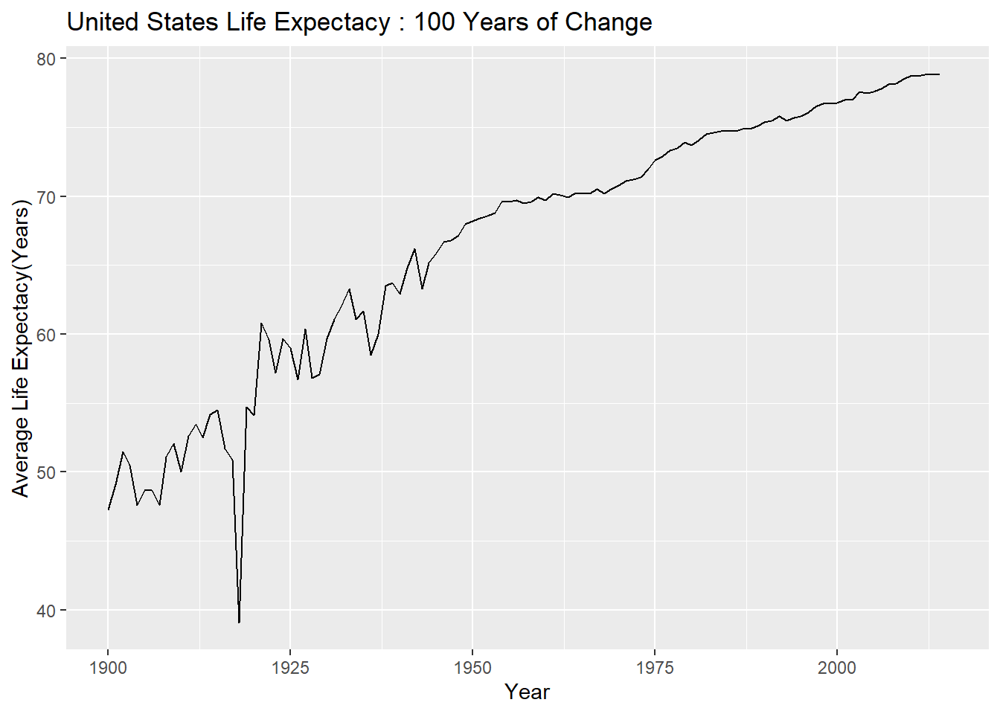
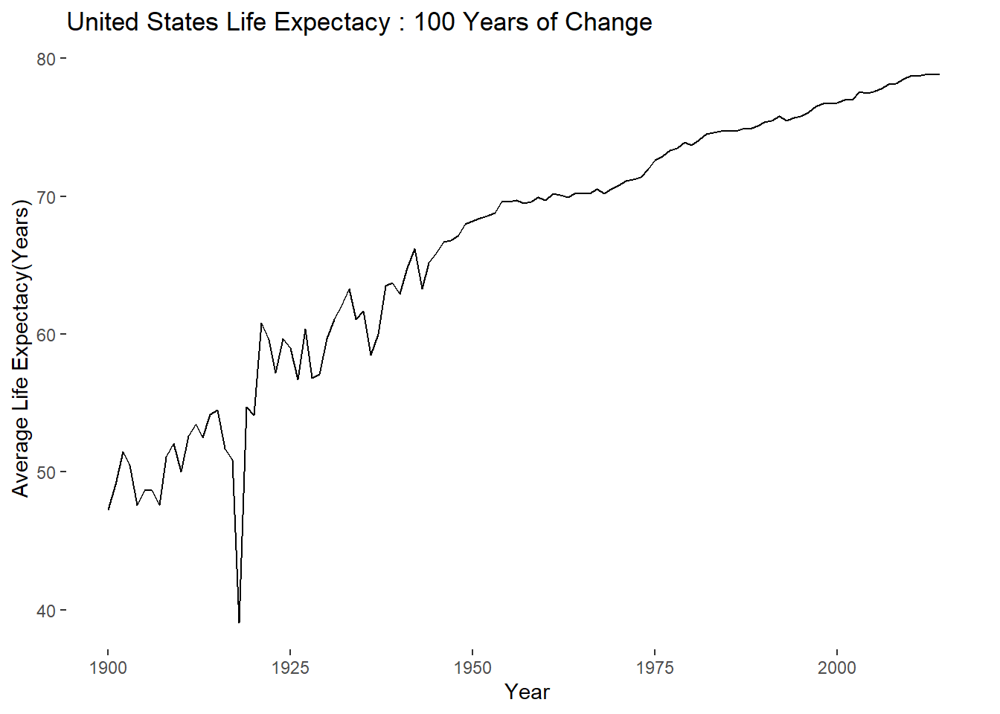

pacman::p_load(readr)
life_expec <- read_csv("datasets/life_expec.csv")
#str(life_expec)Creating Line Graphs
Introduction to Data Visualization
In the next couple of discussions we will examine data visualization in details
We will be working to identify patterns in our datasets
Three important key issues :
- Explore the principles of data visualization.
- Learn to write R code to visualize trends in data in different ways.
- Build intuition around when different types of visualizations will help you understand your data.
ggplot2
We will learn the most important tidyverse package : ggplot2
The ggplot2 package is so popular among R users because of its consistent syntax and the efficiency with which you can use it to create high-quality visualizations.
The Data and Mission Objective
In this mission, you’ll create line graphs to visualize and understand changes in United States life expectancies over time.
The National Center for Health Statistics has been tracking United States mortality trends since 1900.
They’ve compiled data on United States citizen life expectancy by race and sex.
The data description
Each column in the data frame contains a variable pertaining to the population of individuals born each year. Here’s an explanation of each variable:
1.Year: The year of birth.
2.Race: The races represented in the measured population.
3.Sex: The sex of the measured population.
4.Avg_Life_Expec: The average life expectancy, in years, at birth of people born in a given year.
5.Age_Adj_Death_Rate: The age adjusted death rate of people born in a given year.
The age adjusted death rate is a metric that adjusts death rate for populations’ age distributions to make population comparisons fair.
Data Collection
Since collection of these data began in 1900, we have over 100 years of data that we can use to study changes in average U.S. life expectancy over time.
You may suspect that, as health care has improved, people are living longer than they did earlier in the 20th century.
As you scroll through the data frame, you’ll see that, indeed, life expectancy has generally increased and death rate has decreased over time.
Summary of Our Data
life_expec$Race <- factor(life_expec$Race)
life_expec$Sex <- factor(life_expec$Sex)
summary(life_expec) Year Race Sex Avg_Life_Expec
Min. :1900 All Races:348 Both Sexes:348 Min. :29.10
1st Qu.:1929 Black :348 Female :348 1st Qu.:56.60
Median :1958 White :348 Male :348 Median :66.60
Mean :1958 Mean :64.12
3rd Qu.:1986 3rd Qu.:73.60
Max. :2015 Max. :81.40
NA's :9
Age_Adj_Death_Rate
Min. : 616.7
1st Qu.:1040.2
Median :1541.4
Mean :1614.1
3rd Qu.:2073.0
Max. :3845.7
Observing Patterns
While scanning a data frame may give you some sense of general patterns, creating a visualization of the data allows for a more detailed analysis, such as envisioning when historical events led to temporarily decreased life expectancy.
Exploring data visually is usually one of the first steps data scientists take when working with new data.
Using Plots to Explore Patterns in Data
Plots are visual representations that use graphics like dots, lines, and bars to help you look for patterns in data.
A plot has variables like x and y
There are many types of plots you can use to visualize data
Selecting the appropriate plot for your data, and the questions you want to use it to answer, is an important skill that you’ll hone over time.
Changes in life expectancy over time.
Put another way, we are interested in the relationship between life expectancy (the variable Avg_Life_Expec) and time (the variable Year).
For this task, we’ll use a line chart, which is a type of plot especially useful for visualizing changes over time.
A line chart displays information as a series of data points connected by a line:
Line graphs are useful for depicting data that are continuous, meaning the data can have any value.
Average life expectancy, as measured in years, is an example of continuous data.
Data Visualization and Grammer of Graphics
library(ggplot2)The gg in ggplot2 stands for “Grammar of Graphics”,
Refers to a system for data visualization first described by Leland Wilkinson.
Hadley Wickham, chief data scientist at RStudio, used the principles of the Grammar of Graphics to develop ggplot2 to allow systematic, consistent, time-efficient creation of data visualizations.
Step by Step
- A learning dataset
x <- c(1,4,3,5,6)
y <- c(6,3,5,1,2)- To begin making a plot, use the
ggplot()function and specify the data frame you’ll be visualizing data from:
ggplot( data = data_frame)
This step creates a coordinate system that you can add layers to.
Store your dataframes as variables
The graphic you’ll see at this stage is an empty plot.
Task
- Use the
ggplot()function to create the first layer of your plot using the life_expec data frame.
Solution
ggplot( data = life_expec)
Mapping Values to Axes
At this point, your graph isn’t much to look at.
You’ve created an empty graph for your data that you will now add layers to.
The first layer you’ll add is one to map your data points to scales and a coordinate system, which generates axes.
To define the variables you want to map to your graph, you’ll add a layer using aes(), which is short for “aesthetics”, to your graph
ggplot(data = data_frame) + aes(x = variable_1, y = variable_2)
Axes
When graphing two-dimensional data,which is in most of the analysis, ggplot2 by default uses the Cartesian coordinate system. This means that your graphs have two axes:
- Vertical Axis
- Horizontal Axis
Which Axis?
How do you know which axis to use for which variable?
The answer to this question is informed by what you think the relationship between two variables is:
The variable that changes depending on the other variable is called the dependent variable. We assign this variable to the vertical axis (y-axis)
The variable that changes independent of the other variable is called the independent variable. We assign this variable to the horizontal axis (x-axis)
In our dataset, the
Avg_Life_Expecchanges as time progresses, and so we would consider it to be the dependent variable. TheYearvariable represents time, and is the independent variable:
Task
- Let’s add a layer to your graph to map the Avg_Life_Expec and Year variables to a coordinate system.
- Add an
aes()layer to your graph specifying Avg_Life_Expec as the dependent variable and Year as the independent variable
Solution
ggplot( data = life_expec) +
aes( x = Year , y = Avg_Life_Expec)
Adding Geometric Objects To Visualize Data Points
Now, your chart has a coordinate system and axes:
With this foundation in place, the next step is to add geometric symbols to the graph to represent data points.
To add a line representing the relationship between the Year and Avg_Life_Expec variables to your graph, you’ll add a
geom_line()layer to your graph:
# ggplot(data = data_frame) +
# aes(x = variable_1, y = variable_2) +
# geom_line()- Notice how we add each new layer to the graph using a + at the end of the preceding line of code.
Task
- Let’s add a layer to your graph to allow you to visualize the data.
- Add a layer to your graph to illustrate the relationship between Year and Avg_Life_Expec.
Solution
ggplot( data = life_expec) +
aes( x = Year , y = Avg_Life_Expec) +
geom_line()
Selecting Data for Visualizion
You have now produced a graph with the relationship between Year and Avg_Life_Expec represented by a line:
However, the graph you’ve created appears to have multiple data points for Avg_Life_Expec for each instance of Year.
Let’s take a look at a single year from the life_expec data frame to see what’s going on:
Code
library(dplyr)
life_expec %>%
filter( Year == 2000 )# A tibble: 9 × 5
Year Race Sex Avg_Life_Expec Age_Adj_Death_Rate
<dbl> <fct> <fct> <dbl> <dbl>
1 2000 All Races Both Sexes 76.8 869
2 2000 All Races Female 79.7 731.
3 2000 All Races Male 74.3 1054.
4 2000 Black Both Sexes 71.8 1121.
5 2000 Black Female 75.1 928.
6 2000 Black Male 68.2 1404.
7 2000 White Both Sexes 77.3 850.
8 2000 White Female 79.9 715.
9 2000 White Male 74.7 1029.Explanations
This is because, for each year, average life expectancies for multiple populations (by sex and race) are included in the data set.
To get a sense for the change over time of life expectancy for the entire U.S. population, let’s use data for all races and both sexes to create the line graph.(filtering)
TASK
Let’s create a new line graph containing only average life expectancy data for the entire U.S. population.
1.Create a new data frame, life_expec_filter, containing only rows for which the Race variable has the value “All Races” and the Sex variable has the value “Both Sexes”. 2.Create a line graph that displays the relationship between Avg_Life_Expec and Year.
Solution
life_expec_filter <- life_expec %>%
filter( Race == "All Races" & Sex == "Both Sexes")
plot1 <- ggplot( data = life_expec_filter) +
aes(x = Year , y = Avg_Life_Expec) +
geom_line()The plot

Explanations
This visualization of the relationship between Avg_Life_Expec and Year allows for the quick detection of some interesting patterns:
1.Generally, average life expectancy of the U.S. population has been increasing over time.
2.Before the 1950s, life expectancy fluctuated substantially from year to year.
3.In the 1920s, life expectancy dropped dramatically, and then increased once again.
Do you have any knowledge of world and U.S. history that may explain some of these patterns?
Adding Axis Title and Changing Axis Labels
- A graph should be able to stand out alone
- A title will help to tell what is the plot about
- Axis labels will which data is being represented
- The
labs()is used for titles and axis labels - Be descriptive
- The syntax
# ggplot(data = data_frame) +
# aes(x = variable_1, y = variable_2) +
# geom_line() +
# labs(title = "Title of Graph", x = "new x label",
# y = "new y label")Task
- 1.Give your graph the descriptive title that communicates the goal of the visualization: “United States Life Expectancy: 100 Years of Change”
- Give the y-axis this label: “Average Life Expectancy (Years)”
Solution
plot2 <- ggplot( data = life_expec_filter) +
aes( x = Year , y = Avg_Life_Expec) +
geom_line() +
labs ( title = "United States Life Expectacy : 100 Years of Change",
y = "Average Life Expectacy(Years)" )The labelled plot

Refining Graph Aesthetics
Time to make your plot stand out
Making modifications such as background color
To modify non-data ggplot2 graph components, including background color, you can add a layer to your graph using theme().
Within the theme() layer, you’ll use the argument:
panel.background = element_rect("background_color")
+To specify the color of the background rectangle (which is what “rect” stands for).
The syntax
# ggplot(data = data_frame) +
# aes(x = variable_1, y = variable_2) +
# geom_line() +
# labs(title = "Title of Graph", x = "new x label", y = "new y label") +
# theme(panel.background = element_rect(fill = "background_color"))Task
Let’s change the background of your line graph to make it less distracting
1 . Change the background color of your line graph to white
Solution
plot2 +
theme(panel.background = element_rect(fill = "white"))
Using Line Graph to Understand the Data
First, we can see that, generally, the average U.S. life expectancy has increased over time.
However, notice the sharp drop in life expectancy around the year 1920, from about 55 to under 40 years. What could have cause this?
A bit of research reveals that, in 1918, there was a deadly influenza epidemic that affected the U.S. population, this could explain the rapid decrease in average life expectancy.
It’s also interesting to observe that average life expectancy fluctuated between 1900 and 1950 before becoming more stable from year to year after about 1950.
**Do you have any ideas about possible causes?**